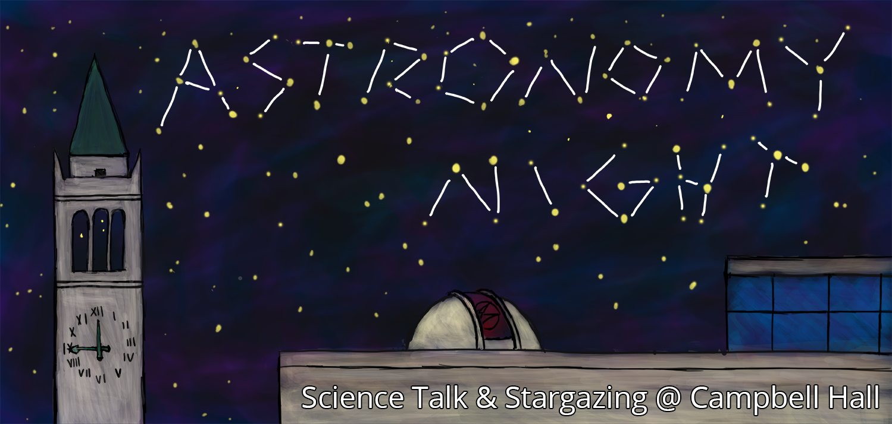
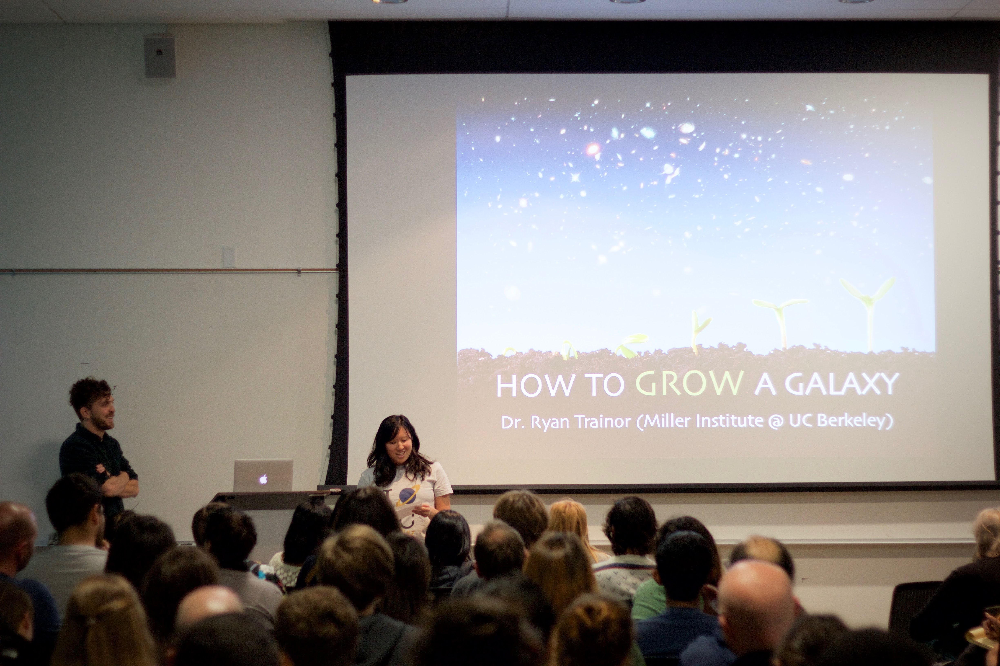
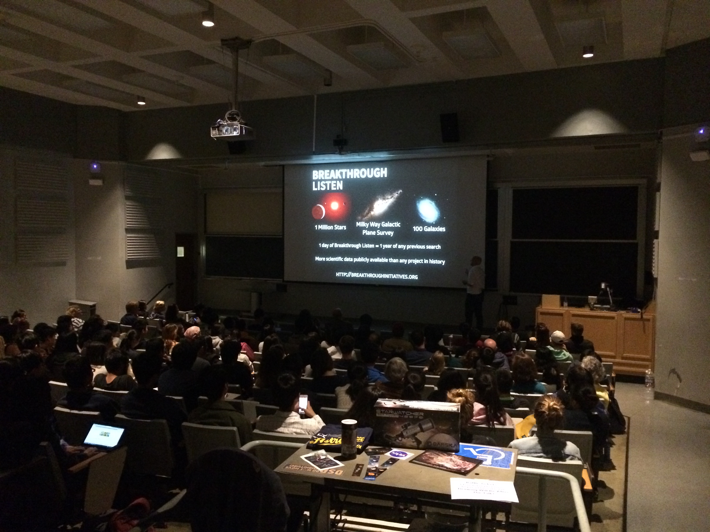
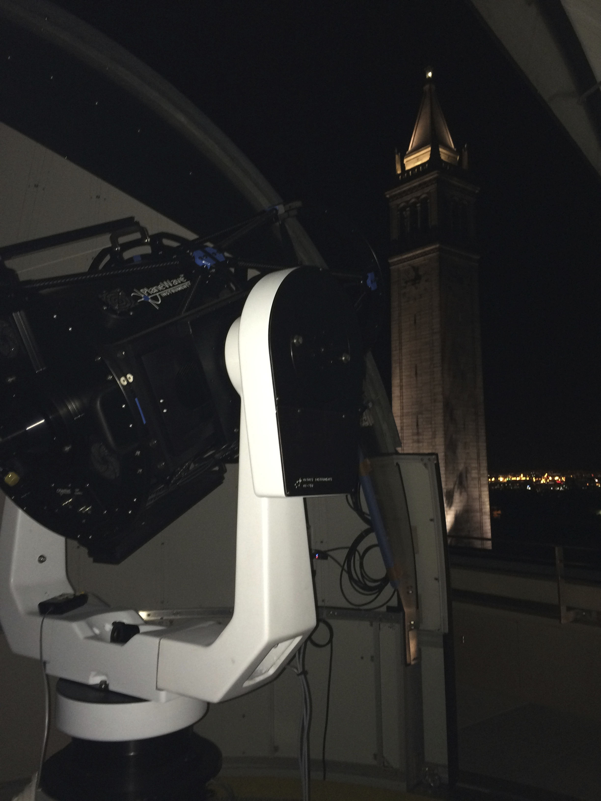
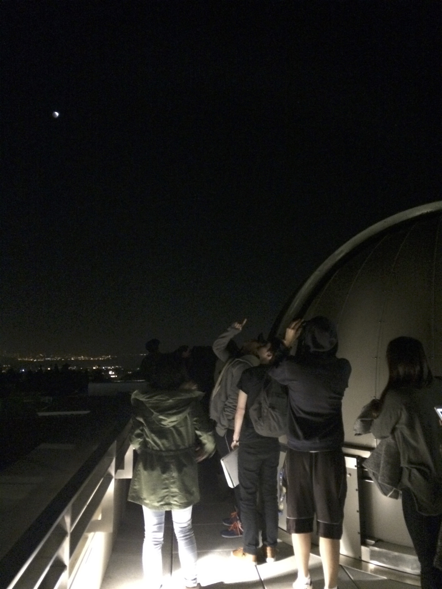
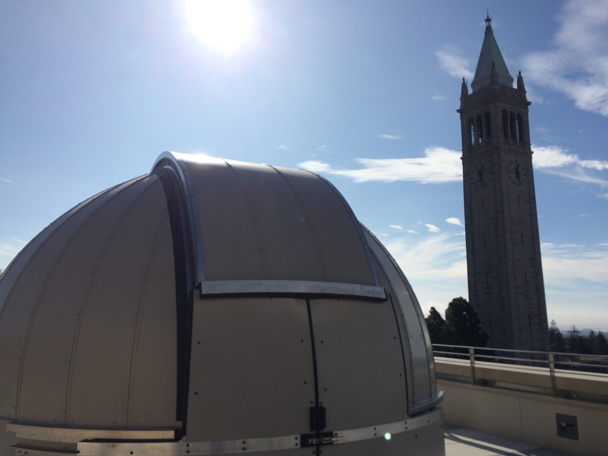
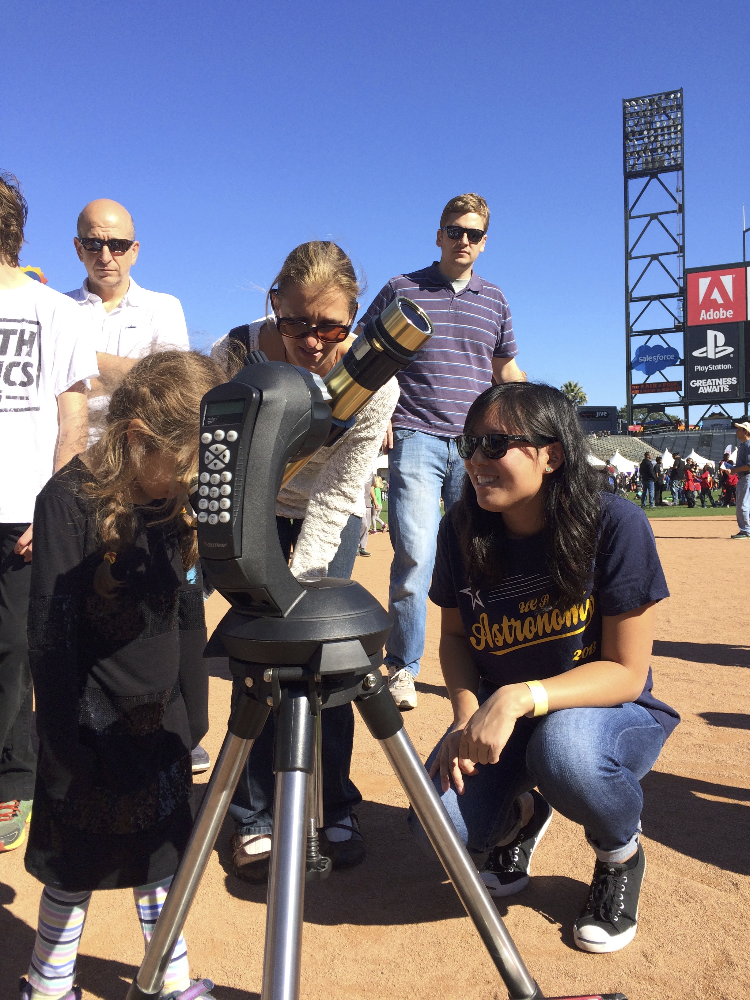
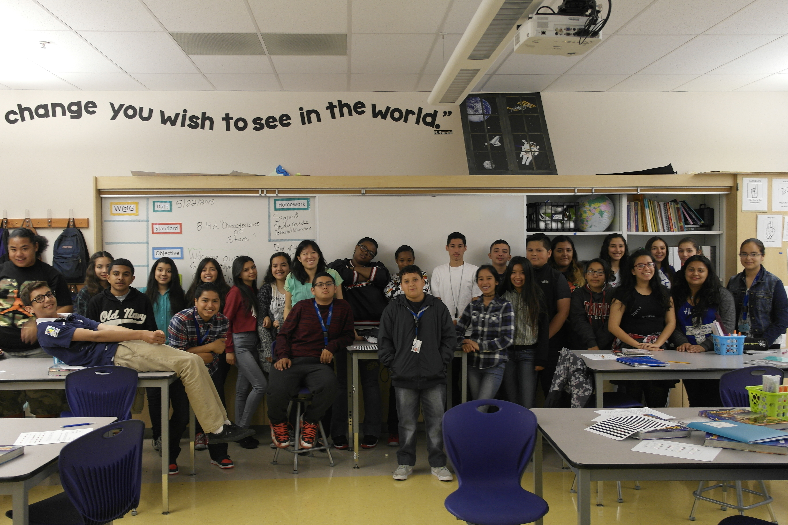
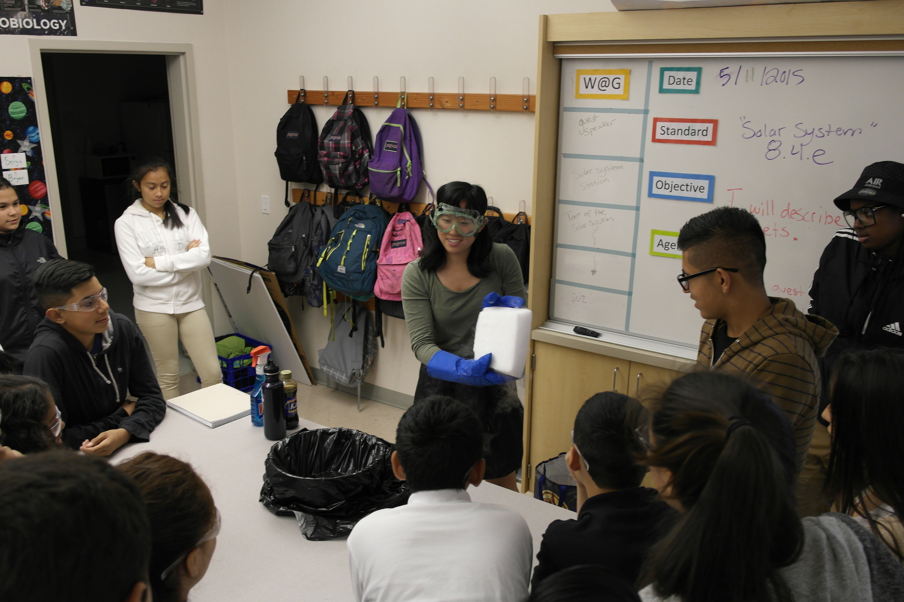

I am super passionate about sharing my love for astronomy and science to public audiences. I enjoy developing new demos and hands-on activities for outreach events, as well as organizing large events and engaging with the public. Here are some of my favorite outreach activities!
Astro Night
In 2016, I created and led the development of Astro Night. This monthly departmental event consists of a free public astronomy talk given by fantastic speakers and researchers at UC Berkeley, followed by stargazing on the roof of our building with our 17in. telescope. We had 8 successful Astro Nights in 2016 and it's been really great and super rewarding witnessing the community's interest in astronomy.
  Star Parties
One of my favorite things to do is open up the 17in. reflection telescope on the roof of Campbell Hall and host star parties for students and the public. Even though Berkeley has a lot of light pollution and fog, we can still observe the planets and cool objects like the Crab Nebula on clear nights. I think it's so important to take a moment out of our busy lives every once in awhile to connect with the night sky, and I love sharing this experience with others.
  Discovery Day
One of the largest outreach events UC Berkeley's Astronomy Department participates in is Discovery Day at AT&T Park, which is part of the annual Bay Area Science Festival. This event is particularly great because of all the families and kids that attend. I can always be sure I'll be meeting future astronomers!
Project ASTRO
In 2014-2015, I was the classroom astronomer for an 8th grade science classroom in the Bay Area. It was so much fun making a comet with dry ice and showing the students how awesome science is!
 